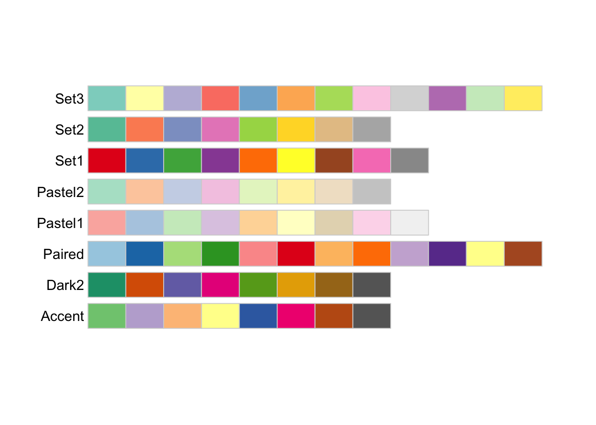
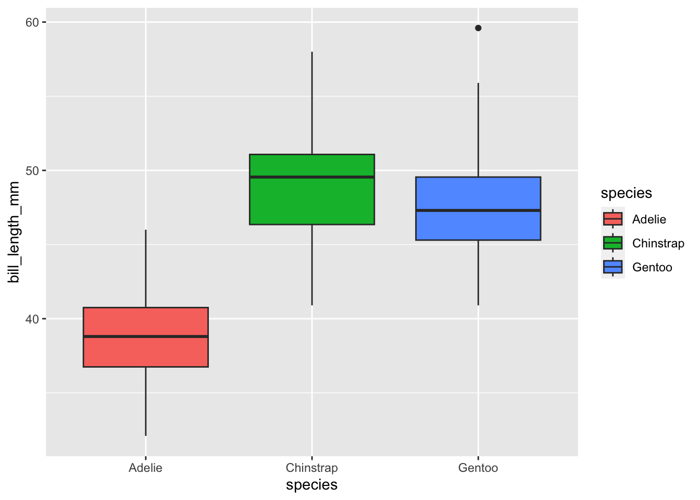

install.packages("palmerpenguins")Plotting 2: aesthetics, violin, and boxplots
plotting
ggplot2

1 Introduction
Recap of the past session
Last week’s session marked the beginning of our data visualization journey with ggplot2. We explored the philosophy of coding graphics, created a versatile ggplot template for various charts, and discovered how to add visual elements using aesthetics and layers. Exciting times ahead!
Session Goals
- Let’s pick up on aesthetics and learn some more about it. Furthermore, let’s introduce the
theme()function. - Learn the basic of other geom_boxplot(), geom_violin(), stat_summary.
2 Our data set

We are going to continue using our üêß data set from the package palmerpenguins. If you haven‚Äôt done so, please install that package first:
palmerpenguins is a package developed by Allison Horst, Alison Hill and Kristen Gorman, including a data set collected by Dr. Kristen Gorman at the Palmer Station Antarctica, as part of the Long Term Ecological Research Network. It is a nice, relatively simple data set to practice data exploration and visualization in R.
We’ll now load the package, along with the tidyverse (which includes ggplot2):
library(palmerpenguins)
library(tidyverse)── Attaching core tidyverse packages ──────────────────────── tidyverse 2.0.0 ──
✔ dplyr 1.1.4 ✔ readr 2.1.5
✔ forcats 1.0.0 ✔ stringr 1.5.1
✔ ggplot2 3.4.4 ✔ tibble 3.2.1
✔ lubridate 1.9.3 ✔ tidyr 1.3.1
✔ purrr 1.0.2
── Conflicts ────────────────────────────────────────── tidyverse_conflicts() ──
✖ dplyr::filter() masks stats::filter()
✖ dplyr::lag() masks stats::lag()
ℹ Use the conflicted package (<http://conflicted.r-lib.org/>) to force all conflicts to become errorsOnce you’ve loaded that package you will have a data frame called penguins at your disposal — let’s take a look:
penguins# A tibble: 344 × 8
species island bill_length_mm bill_depth_mm flipper_length_mm body_mass_g
<fct> <fct> <dbl> <dbl> <int> <int>
1 Adelie Torgersen 39.1 18.7 181 3750
2 Adelie Torgersen 39.5 17.4 186 3800
3 Adelie Torgersen 40.3 18 195 3250
4 Adelie Torgersen NA NA NA NA
5 Adelie Torgersen 36.7 19.3 193 3450
6 Adelie Torgersen 39.3 20.6 190 3650
7 Adelie Torgersen 38.9 17.8 181 3625
8 Adelie Torgersen 39.2 19.6 195 4675
9 Adelie Torgersen 34.1 18.1 193 3475
10 Adelie Torgersen 42 20.2 190 4250
# ℹ 334 more rows
# ℹ 2 more variables: sex <fct>, year <int># Or glimpse() for a sort of transposed view, so we can see all columns:
glimpse(penguins)Rows: 344
Columns: 8
$ species <fct> Adelie, Adelie, Adelie, Adelie, Adelie, Adelie, Adel…
$ island <fct> Torgersen, Torgersen, Torgersen, Torgersen, Torgerse…
$ bill_length_mm <dbl> 39.1, 39.5, 40.3, NA, 36.7, 39.3, 38.9, 39.2, 34.1, …
$ bill_depth_mm <dbl> 18.7, 17.4, 18.0, NA, 19.3, 20.6, 17.8, 19.6, 18.1, …
$ flipper_length_mm <int> 181, 186, 195, NA, 193, 190, 181, 195, 193, 190, 186…
$ body_mass_g <int> 3750, 3800, 3250, NA, 3450, 3650, 3625, 4675, 3475, …
$ sex <fct> male, female, female, NA, female, male, female, male…
$ year <int> 2007, 2007, 2007, 2007, 2007, 2007, 2007, 2007, 2007…3 The Absolute Power of Aesthetics
3.1 Last week’s example on “The power of aesthetics”
Last week we added a third aesthetic to our graph, color. Our current plot mapped bill_length_mm to the x aesthetic, and bill_depth_mm to the y aesthetic — , we then added a mapping of species to the color aesthetic:
p <- ggplot(data = penguins) +
geom_point(mapping = aes(x = bill_length_mm,
y = bill_depth_mm,
color = species))
p
Please note that we begin by using our data set to create a plot object with the function
ggplot(). We then assign this object to the variable p. From this point forward, we can add layers by using the + operator.
3.2 What if we want to customize our plot?
We can do this using theme(). There are several options of themes which control all non-data display. Use theme() if you just need to tweak the display of an existing theme.
For this session, let’s utilize theme_bw().
p <- ggplot(data = penguins) + theme_bw() +
geom_point(mapping = aes(x = bill_length_mm,
y = bill_depth_mm,
color = species))
p
3.3 What if we want to change colors?
We can manually change colors.
# Manual color change
# By using scale_colour_manual(),
# we can specify the exact colours we want to use
p +
scale_color_manual(
# Note that the color order will correspond to
# the order of the species given in the legend
values = c("grey55", "orange", "skyblue"))
By using the colors() function, you can explore numerous color options that are available for selection.
3.4 Using a different color palette: RColorBrewer
There is a wide variety of R color packages specifically designed to offer a range of color palette options, each evoking a distinct mood. For instance, the RColorBrewer package provides a choice of 35 palettes!
At this point, you have become an expert in the fundamentals of R. Installing packages and loading them with library() is now second nature to you.
Now, we can install RColorBrewer and choose one from the many palettes it offers.
RColorBrewer::display.brewer.all(type = "qual")
Above, you can observe the organization of the colors into distinct groups based on their sequential, diverging, or mixed characteristics. It is important to note that varied palettes are advantageous for varying data types.
Let’s use these palettes with our original penguin graph. Here is an example demonstrating how the Set1 palette is utilized to group data points with the function scale_color_brewer() and the palette argument.
p +
scale_color_brewer(palette = "Set1")
In addition, the ggplot2 package offers other functions. Two such functions are scale_color_viridis() and scale_color_grey(), which allows us to convert colors to grayscale without sacrificing information. This is especially important for individuals with colorblindness.
p +
scale_color_viridis_d()
Please note that when using
scale_color_viridis() to color data points, we need to specify whether our variable is continuous [using scale_color_viridis_c()] or discrete [using scale_color_viridis_d()]. In this case, the variable species is discrete.
Exercise 1
Let us revisit the scatter plot depicting the correlation between bill length and depth, distinguished by different species using colored data points.
What if we want to use only a grayscale palette for publication purposes?
Hints (click here)
We can use the scale_color_grey() function to color our grouped data points.
Solutions (click here)
p +
scale_color_grey()
3.5 Colorblind-friendly palettes
Have you ever contemplated how your figure might appear when viewed by individuals with different types of color blindness? We can utilize the colorBlindness package to explore this aspect.
Let’s install the colorBlindness package and load it.
# Let's install the colorBlindness package
install.packages("colorBlindness")
library(colorBlindness)To begin with, let’s test out various colors using the cvdPlot() function. This will demonstrate how our current plot appears to individuals with different types of color blindness.
colorBlindness::cvdPlot(p)
Our current color palette is not accessible, as can be observed. However, by using viridis palettes, we can ensure that our plots consistently convey the same information, regardless of the audience.
Let’s use the same viridis palette we used above to make our plot more accessible.
p_viridis <- p +
scale_color_viridis_d()Were we successful? Let’s use cvdPlot() to check again.
colorBlindness::cvdPlot(p_viridis)
3.6 Providing transparency with alpha
How can we incorporate transparency into the data points in our graph? One way to achieve this is by utilizing the alpha feature.
ggplot(data = penguins) +
geom_point(alpha = 0.5, mapping = aes(x = bill_length_mm,
y = bill_depth_mm,
color = species))
Here, we present an example of how to utilize the alpha function to incorporate transparency into our data points. By doing so, we are able to exhibit four variables within a single graph.
ggplot(data = penguins) +
geom_point(mapping = aes(x = bill_length_mm,
y = bill_depth_mm,
color = species,
alpha = flipper_length_mm))
Exercise 2
We like the graph we produced above. We want, however, to also display
body_mass_g.How can we add this additional variable to our graph?
Hints (click here)
We can use the size function within aes().
Solutions (click here)
ggplot(data = penguins) +
geom_point(mapping = aes(x = bill_length_mm,
y = bill_depth_mm,
color = species,
alpha = flipper_length_mm,
size = body_mass_g))
4 Boxplot: geom_boxplot()
A boxplot gives a nice summary of one or more numeric variables. A boxplot is composed of several elements:

Let’s use geom_boxplot to explore the bill_length_mm for the penguien species.
ggplot(data = penguins,
aes(x = species,
y = bill_length_mm,
fill = species)) + # specify species as a grouping variable
geom_boxplot() 
Please note that we add color to the boxplot by applying the
fill option. You may want to experiment with using the color option to observe the differences.
Challenge - Let’s work together!
Let’s consider using a different color palette for the boxplot. Additionally, we might prefer to show the mean value instead of the median value and add some transparency. Lastly, we would like to display our data points to provide information on the sample size for each species.
Hints (click here)
To change the color palette for the boxplot, we can utilize the scale_fill_brewer() function. To include the mean value, we can employ the stat_summary() function. If we want to add transparency, we can use the alpha parameter. Lastly, to overlay the data points, we can utilize the geom_jitter() function.
Solutions (click here)
ggplot(data = penguins,
aes(x = species,
y = bill_length_mm,
fill = species)) + # specify species as a grouping variable
geom_boxplot(alpha = 0.5) +
scale_fill_brewer(palette = "Dark2") +
stat_summary(fun = "mean", color = "red3") +
geom_jitter(alpha = .5) 
5 Violin plot: geom_violin()
Similar to boxplots, violin plots visualize the distribution of a numerical variable for one or multiple groups. However, the shape of a violin graphically represents the distribution of data points that is not easily visible in a boxplot’s summary, leading to a more precise representation of the data (Data-to-Viz).
ggplot(data = penguins,
aes(x = species,
y = bill_length_mm,
fill = species)) + # specify species as a grouping variable
geom_violin(alpha = 0.5) +
scale_fill_brewer(palette = "Dark2") +
stat_summary(fun = "mean", color = "red3") +
geom_jitter(alpha = .5) 
Exercise 3
- To keep only the
Gentoodata, pipe your dataset into thefilter()function. - Create a boxplot examining
bill_length_mmbysexby piping the filtered data intoggplot(). - Ensure that the points with unknown sex (
NA) are removed. - Include the mean value of
bill_length_mmin the boxplots. - Display all data points on top of the boxplot.
- Lastly, display the distribution of each dataset.
- To achieve the graph displaying all the above requirements, you will need to add transparency.
Solutions (click here)
penguins |>
filter(species == "Gentoo", !is.na(sex)) |>
ggplot(aes(x = sex, y = bill_length_mm, color = sex)) +
geom_boxplot() +
scale_color_brewer(palette = "Dark2") +
stat_summary(fun = "mean", color = "red3") +
geom_jitter(alpha = .5) +
geom_violin(alpha = .1)